산업안전기사 (2012-08-26 기출문제)
1과목: 안전관리론
1. 안전인증대상 보호구 중 안전모의 시험성능기준 항목이 아닌 것은?
- 내수성
- 턱끈풀림
- 가연성
- 충격흡수성
(정답률: 77%)

2. 학습지도의 형태 중 참가자에게 일정한 역할을 주어 실제적으로 연기를 시켜봄으로써 자기의 역할을 보다 확실히 인식시키는 방법은?
- 포럼(forum)
- 심포지엄(symposium)
- 롤 플레잉(role playing)
- 케이스 메소드(case method)
(정답률: 89%)
3. 다음 중 안전점검보고서에 수록될 주요 내용으로 적절하지 않은 것은?
- 작업현장의 현 배치 상태와 문제점
- 안전교육 실시 현황 및 추진 방향
- 안전관리 스텝의 인적사항
- 안전방침과 중점개선 계획
(정답률: 89%)
4. 다음 중 산업재해 발생시 조치 순서로 가장 적절한 것은?
- 긴급처리 → 재해조사 → 원인결정 → 대책수립 → 실시계획 → 실시 → 평가
- 긴급처리 → 원인결정 → 재해조사 → 대책수립 → 실시 → 평가
- 긴급처리 → 재해조사 → 원인결정 → 실시계획 → 실시 → 대책수립 → 평가
- 긴급처리 → 실시계획 → 재해조사 → 대책수립 → 평가 → 실시
(정답률: 84%)
5. 다음 중 산업안전보건법상 사업주가 안전ㆍ보건조치의무를 이행하지 아니하여 발생한 중대재해가 연간 2건이 발생 하였을 경우 조치하여야 하는 사항에 해당하는 것은?(관련 규정 개정전 문제로 여기서는 기존 정답인 2번을 누르면 정답 처리됩니다. 자세한 내용은 해설을 참고하세요.)
- 보건관리자 선임
- 안전보건개선계획의 수립
- 안전관리자의 증원
- 물질안전보건자료의 작성
(정답률: 82%)
6. 산업안전보건법에 따라 안전보건개선계획의 수립ㆍ시정 명령을 받은 사업주는 고용노동부장관이 정하는 바에 따라 안전보건개선계획서를 작성하여 그 명령을 받은 날부터 몇 일 이내에 관할 지방고용노동관서의 장에게 제출하여야 하는가?
- 15일
- 30일
- 45일
- 60일
(정답률: 53%)
7. 불안전한 행동을 예방하기 위하여 수정해야 할 조건 중 시간의 소요가 짧은 것부터 장시간 소요되는 순서대로 올바르게 연결된 것은?
- 집단행동 - 개인행위 - 지식 - 태도
- 지식 - 태도 - 개인행위 - 집단행위
- 태도 - 지식 - 집단행위 - 개인행위
- 개인행위 - 태도 - 지식 - 집단행위
(정답률: 72%)
8. 다음 중 무재해운동 기본이념(3원칙)에 해당하지 않는 것은?
- 무의 원칙
- 선취의 원칙
- 참가의 원칙
- 최고경영자의 경영 원칙
(정답률: 82%)
9. 다음 중 브레인스토밍(Brain-storming) 기법의 4원칙에 관한 설명으로 옳은 것은?
- 주제와 관련이 없는 내용은 발표할 수 없다.
- 동료의 의견에 대하여 좋고 나쁨을 평가한다.
- 발표순서를 정하고, 동일한 발표기회를 부여한다.
- 타인의 의견에 대하여는 수정하여 발표할 수 있다
(정답률: 84%)
10. 다음 중 인간관계 관리기법에 있어 구성원 상호간의 선호도를 기초로 집단 내부의 동태적 상호관계를 분석하는 방법으로 가장 적절한 것은?
- 소시오매트리(sociometry)
- 그리드 훈련(grid training)
- 집단역할(group dynamic)
- 감수성 훈련(sensitivity training)
(정답률: 73%)
11. 다음 중 학습의 전개단계에서 주제를 논리적으로 체계화함에 있어 적용하는 방법으로 적절하지 않은 것은?
- 적게 사용하는 것에서 많이 사용하는 것으로
- 미리 알려져 있는 것에서 미지의 것으로
- 전체적인 것에서 부분적인 것으로
- 간단한 것에서 복잡한 것으로
(정답률: 68%)
12. 다음 중 피로검사 방법에 있어 심리적인 방법의 검사 항목에 해당하는 것은?
- 호흡순환기능
- 연속반응시간
- 대뇌피질 활동
- 혈색소 농도
(정답률: 51%)
13. A 사업장의 강도율이 2.5이고, 연간 재해발생건수가 12건, 연간총근로시간수가 120만 시간일 때 이 사업장의 종합 재해지수는 약 얼마인가?
- 1.6
- 5.0
- 27.6
- 230
(정답률: 63%)
14. 다음 중 상황성 누발자의 재해유발원인에 해당하는 것은?
- 주의력 산만
- 저지능
- 설비의 결함
- 도덕성 결여
(정답률: 55%)
15. 다음 중“Near Accident"에 관한 내용으로 가장 적절한 것은?
- 사고가 일어난 인접지역
- 사망사고가 발생한 중대재해
- 사고가 일어난 지점에 계속 사고가 발생하는 지역
- 사고가 일어나더라도 손실을 전혀 수반하지 않는 재해
(정답률: 66%)
16. 기업내 정형교육 중 TWI(Training Within Industry)의 교육 내용과 가장 거리가 먼 것은?
- Job Standardization Training
- Job Instruction Training
- Job Method Training
- Job Relation Training
(정답률: 81%)
17. 다음 중 산업안전보건법상 사업내 안전.보건교육에 있어 근로자 정기안전.보건교육의 내용이 아닌 것은? (단, 산업안전보건법 및 일반관리에 관한 사항은 제외한다.)
- 표준안전작업방법 및 지도 요령에 관한 사항
- 산업보건 및 직업병 예방에 관한 사항
- 유해.위험 작업환경 관리에 관한 사항
- 건강증진 및 질병 예방에 관한 사항
(정답률: 67%)
18. 다음 중 재해코스트 산출에 있어 직접비에 해당하지 않은 것은?
- 장례비
- 요양비
- 장해 보상비
- 설비의 수리비 및 손실비
(정답률: 79%)
19. 다음 중 안전교육의 기본방향으로 가장 적합하지 않은 것은?
- 안전작업을 위한 교육
- 사고사례중심의 안전교육
- 생산활동 개선을 위한 교육
- 안전의식 향상을 위한 교육
(정답률: 83%)
20. 산업안전보건법상 안전.보건표지의 종류 중 바탕은 파란색, 관련 그림은 흰색을 사용하는 표지는?
- 사용금지
- 세안장치
- 몸균형상실경고
- 안전복착용
(정답률: 69%)
2과목: 인간공학 및 시스템안전공학
21. 다음 중 시스템의 수명 및 신뢰성에 관한 설명으로 틀린 것은?
- 수리가 가능한 시스템의 평균 수명은 평균 고장율(MTBF)과 비례관계가 성립한다.
- 직렬시스템을 구성하는 부품들 중에서 최소 수명을 갖는 부품에 의해 시스템의 수명이 정해진다.
- 리던던시 설계와 디레이팅을 시스템 설계 기술로 적용하면 시스템 고유의 신뢰성을 증가시킬 수 있다.
- 수리가 불가능한 n개의 구성요소가 병렬구조를 갖는 설비는 중복도(n-1)가 늘어날수록 수명이 길어진다.
(정답률: 63%)
22. 다음 중 근력에 영향을 주는 요인을 가장 관계가 적은 것은?
- 식성
- 동기
- 성별
- 훈련
(정답률: 55%)
23. 중복사상이 있는 FT(Fault Tree)에서 모든 컷셋(cut set)을 구한 경우에 최소 컷셋(minimal cut set)으로 옳은 것은?
- 모든 컷셋이 바로 최소 컷셋이다.
- 모든 컷셋에서 중복되는 컷셋만이 최소 컷셋이다.
- 최소 컷셋은 시스템의 고장을 방지하는 기본 고장들의 집합이다.
- 중복되는 사상의 컷셋 중 다른 컷셋에 포함되는 셋을 제거한 컷셋과 중복되지 않는 사상의 컷셋을 합한 것이 최소 컷셋이다.
(정답률: 56%)
24. 다음 설명에서 해당하는 용어를 올바르게 나타낸 것은?
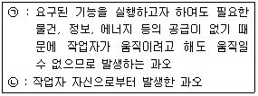
- (ㄱ) : Secondary Error (ㄴ) : Command Error
- (ㄱ) : Command Error (ㄴ) : Primary Error
- (ㄱ) : Primary Error (ㄴ) : Secondary Error
- (ㄱ) : Command Error (ㄴ) : Secondary Error
(정답률: 67%)
25. 시스템 안전 프로그램에 대하여 안전 점검 기준에 따른 평가를 내리는 시점은 시스템의 수명주기 중 어느 단계 인가?
- 구상단계
- 설계단계
- 생산단계
- 운전단계
(정답률: 55%)
26. 자동생산시스템에서 3가지 고장 유형에 따라 각기 다른색의 신호등에 불이 들어오고 운전원은 색에 따라 다른 조종 장치를 조작하도록 하려고 한다. 이 때 운전원이 신호를 보고 어떤 장치를 조작해야 할지를 결정하기까지 걸리는 시간을 예측하기 위해서 사용할 수 있는 이론은?
- 웨버(Weber) 법칙
- 피츠(Fitts) 법칙
- 힉-하이만(Hick-Hyman) 법칙
- 학습효과(learning effect) 법칙
(정답률: 49%)
27. 다음 중 인간-기계 체제(Man-machine system)의 연구 목적으로 가장 적절한 것은?
- 정보 저장의 극대화
- 운전시 피로의 극소화
- 시스템의 신뢰성 극대화
- 안전을 극대화시키고 생산능률을 향상
(정답률: 83%)
28. 다음 중 촉감의 일반적인 척도의 하나인 2점 문턱값(two-point threshold)이 감소하는 순서대로 나열된 것은?
- 손바닥 → 손가락 → 손가락 끝
- 손가락 → 손바닥 → 손가락 끝
- 손가락 끝 → 손가락 → 손바닥
- 손가락 끝 → 손바닥 → 손가락
(정답률: 73%)
29. 다음 중 중추신경계 피로(정신 피로)의 척도로 사용할 수 있는 시각적 점멸융합주파수(VFF)를 측정할 때 영향을 주는 변수에 관한 설명으로 틀린 것은?
- 휘도만 같다면 색상은 영향을 주지 않는다.
- 표적과 주변의 휘도가 같을 때 최대가 된다.
- 조명 강도의 대수치에 선형적으로 반비례한다.
- 사람들 간에는 큰 차이가 있으나 개인의 경우 일관성이 있다.
(정답률: 42%)
30. 다음 중 표시장치에 나타나는 값들이 계속적으로 변하는 경우에는 부적합하며 인접한 눈금에 대한 지침의 위치를 파악할 필요가 없는 경우의 표시장치 형태로 가장 적합한 것은?
- 정목 동침형
- 정침 동목형
- 동목 동침형
- 계수형
(정답률: 51%)
31. 다음 [표]는 불꽃놀이용 화학물질취급설비에 대한 정량적 평가이다. 해당 항목에 대한 위험등급이 올바르게 연결된 것은?
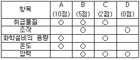
- 취급물질-Ⅰ등급, 화학설비의 용량-Ⅰ등급
- 온도-Ⅰ등급, 화학설비의 용량-Ⅱ등급
- 취급물질-Ⅰ등급, 조작-Ⅳ등급
- 온도-Ⅱ등급, 압력-Ⅲ등급
(정답률: 56%)
32. 프레스기의 안전장치 수명은 지수분포를 따르며, 평균 수명은 100시간이다. 새로 구입한 안전장치가 향후 50시간 동안 고장 없이 작동할 확률(A)과 이미 100시간을 사용한 안전 장치가 향후 50시간 이상 견딜 확률(B)은 각각 얼마인가?
- A : 0.606, B : 0.606
- A : 0.990, B : 0.606
- A : 0.990, B : 0.951
- A : 0.951, B : 0.606
(정답률: 62%)
33. 남성 작업자가 티셔츠(0.09 clo), 속옷(0.⑤ clo), 가벼운 바지(0.26 clo), 양말(0.04 clo), 신발(0.04 clo)을 착용하고 있을 때 총보온율(clo)값은 얼마인가?
- 0.260
- 0.480
- 1.184
- 1.280
(정답률: 74%)
34. 다음 중 소음에 의한 청력손실이 가장 크게 나타나는 주파수대는?
- 2000Hz
- 4000Hz
- 10000Hz
- 20000Hz
(정답률: 60%)
35. 다음 중 부울대수의 관계식으로 틀린 것은?
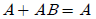
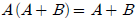
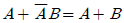
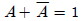
(정답률: 51%)
36. 다음 중 동작경제의 원칙으로 틀린 것은?
- 가능한 한 관성을 이용하여 작업을 한다.
- 공구의 기능을 결합하여 사용하도록 한다.
- 휴식시간을 제외하고는 양손이 같이 쉬도록 한다.
- 작업자가 작업 중에 자세를 변경할 수 있도록 한다.
(정답률: 64%)
37. 산업안전보건법에 따라 유해위험방지계획서의 제출대상 사업은 해당 사업으로서 전기 계약용량이 얼마 이상인 사업을 말하는가?
- 150kW
- 200kW
- 300kW
- 500kW
(정답률: 80%)
38. [그림]과 같이 FTA로 분석된 시스템에서 현재 모든 기본 사상에 대한 부품이 고장난 상태이다. 부품 X1 부터 부품 X5 까지 순서대로 복구한다면 어느 부품을 수리 완료하는 순간부터 시스템은 정상가동이 되겠는가?
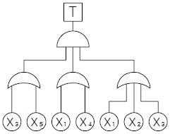
- X1
- X2
- X3
- X4
(정답률: 75%)
39. 다음 중 복잡한 시스템을 설계, 가동하기 전의 구상단계에서 시스템의 근본적인 위험성을 평가하는 가장 기초적인 위험도 분석 기법은?
- 예비위험분석(PHA)
- 결함수분석법(FTA)
- 고장형태와 영향분석(FMEA)
- 운용안전성분석(OSA)
(정답률: 79%)
40. 다음 중 인식과 자극의 정보처리 과정에서 3단계에 속하지 않는 것은?
- 인지단계
- 반응단계
- 행동단계
- 인식단계
(정답률: 40%)
3과목: 기계위험방지기술
41. 프레스기의 금형을 부착.해체 또는 조정하는 작업을 할 때, 근로자의 신체의 일부가 위험한계에 들어갈 때에 슬라이드가 갑자기 작동함으로써 발생하는 근로자의 위험을 방지하기 위해 사용해야 하는 것은?
- 방호울
- 안전블록
- 시건장치
- 날접촉예방장치
(정답률: 78%)
42. 금형의 안전화에 관한 설명으로 옳지 않은 것은?
- 금형을 설치하는 프레스의 T홈 안길이는 설치 볼트 직경의 2배 이상으로 한다.
- 맞춤 핀을 사용할 때에는 헐거움 끼워맞춤으로 하고, 이를 하형에 사용할 때에는 낙하방지의 대책을 세워 둔다.
- 금형의 사이에 신체 일부가 들어가지 않도록 이동 스리퍼와 다이의 간격은 8mm 이하로 한다.
- 대형 금형에서 싱크가 헐거워짐이 예상될 경우 싱크만으로 상형을 슬라이드에 설치하는 것을 피하고 볼트를 사용하여 조인다.
(정답률: 65%)
43. 컨베이어(conveyor) 역전방지장치의 형식을 기계식과 전기식으로 구분할 때 기계식에 해당하지 않는 것은?
- 라쳇식
- 밴드식
- 스러스트식
- 롤러식
(정답률: 66%)
44. 다음 중 원심기의 안전에 관한 설명으로 적절하지 않은 것은?
- 원심기에는 덮개를 설치하여야 한다.
- 원심기로부터 내용물을 꺼내거나 원심기의 정비, 청소, 검사, 수리작업을 하는 때에는 운전을 정지 시켜야 한다.
- 원심기의 최고사용회전수를 초과하여 사용하여서는 아니 된다.
- 원심기에 과압으로 인한 폭발을 방지하기 위하여 압력방출장치를 설치하여야 한다.
(정답률: 75%)
45. 원통의 내면을 선반으로 절삭시 안전상 주의할 점으로 옳은 것은?
- 공작물이 회전 중에 치수를 측정한다.
- 절삭유가 튀므로 면장갑을 착용한다.
- 절삭바이트는 공구대에서 길게 나오도록 설치한다.
- 보안경을 착용하고 작업한다.
(정답률: 76%)
46. 산업안전보건법령상 롤러기에 사용하는 급정지장치 중 작업자의 무릎으로 조작하는 것의 위치로 옳은 것은?
- 밑면에서 0.2m 이상 0.4m 이내
- 밑면에서 0.4m 이상 0.6m 이내
- 밑면에서 0.8m 이상 1.1m 이내
- 밑면에서 1.8m 이내
(정답률: 74%)
47. 기계설비 안전화를 외형의 안전화, 기능의 안전화, 구조의 안전화로 구분할 때 다음 중 구조의 안전화에 해당하는 것은?
- 가공 중에 발생한 예리한 모서리, 버(Burr) 등을 연삭기로 라운딩
- 기계의 오동작을 방지하도록 자동제어장치 구성
- 이상발생시 기계를 급정지시킬 수 있도록 동력 차단 장치를 부착하는 조치
- 열처리를 통하여 기계의 강도와 인성을 향상
(정답률: 50%)
48. 다음 중 비파괴 시험의 종류에 해당하지 않는 것은?
- 와류 탐상시험
- 초음파 탐상시험
- 인장 시험
- 방사선 투과시험
(정답률: 83%)
49. 다음 중 컨베이어의 종류가 아닌 것은?
- 체인 컨베이어
- 롤러 컨베이어
- 스크류 컨베이어
- 그리드 컨베이어
(정답률: 56%)
50. 프레스 방호장치의 성능 기준에 대한 설명 중 잘못된 것은?
- 양수 조작식 방호장치에서 누름버튼의 상호간 내측거리는 300mm 이상으로 한다.
- 수인식 방호장치는 120SPM 이하의 프레스에 적합하다.
- 양수 조작식 방호장치는 1행정 1정지기구를 갖춘 프레스 장치에 적합하다.
- 수인식 방호장치에서 수인끈의 재료는 합성섬유로 직경이 2mm 이상이어야 한다.
(정답률: 67%)
51. 안전율을 구하는 방법으로 옳은 것은?
- 안전율 = 허용응력 / 기초강도
- 안전율 = 허용응력 / 인장강도
- 안전율 = 인장강도 / 허용응력
- 안전율 = 안전하중 / 파단하중
(정답률: 69%)
52. 크레인의 로프에 질량 2000kg의 물건을 10m/s2의 가속도로 감아올릴 때, 로프에 걸리는 총 하중은 약 몇 kN 인가?
- 9.6
- 19.6
- 29.6
- 39.6
(정답률: 51%)
53. 지게차의 중량이 8kN, 화물중량이 2kN, 앞바퀴에서 화물의 무게중심까지의 최단거리가 0.5m 이면 지게차가 안정되기 위한 앞바퀴에서 지게차의 무게중심까지의 거리는 최소 몇 m 이상이어야 하는가?
- 0.450m
- 0.325m
- 0.225m
- 0.125m
(정답률: 51%)
54. 발음원이 이동할 때 그 진행방향 쪽에서는 원래 발음원의 음보다 고음으로, 진행방향 반대쪽에서는 저음으로 되는 현상을 무엇이라고 하는가?
- 도플러(Doppler) 효과
- 마스킹(Masking) 효과
- 호이겐스(Huygens) 효과
- 임피던스(Impedance) 효과
(정답률: 57%)
55. 보일러 발생증기의 이상 현상이 아닌 것은?
- 역화(Back fire)
- 프라이밍(Priming)
- 포밍(Forming)
- 캐리오버(Carry over)
(정답률: 66%)
56. 산업용 로봇의 작동 범위 내에서 교시 등의 작업을 하는 경우, 작업시작 전 점검사항에 해당하지 않는 것은?
- 외부전선의 피복 또는 외장의 손상 유무
- 매니퓰레이터 작동의 이상 유무
- 제동장치 및 비상정지장치의 기능
- 압력방출장치의 기능
(정답률: 77%)
57. 옥내에 통로를 설치할 때 통로 면으로부터 높이 얼마 이내에 장애물이 없어야 하는가?
- 1.5m
- 2.0m
- 2.5m
- 3.0m
(정답률: 62%)
58. 산업안전보건법령상 프레스 작업시작 전 점검해야 할 사항에 해당하는 것은?
- 언로드 밸브의 기능
- 하역장치 및 유압장치 기능
- 권과방지장치 및 그 밖의 경보장치의 기능
- 1행정 1정지기구.급정지장치 및 비상정지장치의 기능
(정답률: 66%)
59. 일반적으로 장갑을 착용하고 작업해야 하는 것은?
- 드릴작업
- 선반작업
- 전기용접작업
- 밀링작업
(정답률: 81%)
60. 롤러기의 물림점(Nip Point)의 가드 개구부의 간격이 15mm일 때 가드와 위험점 간의 거리는 몇 mm 인가? (단, 위험점이 전동체는 아니다.)
- 15
- 30
- 60
- 90
(정답률: 42%)
4과목: 전기위험방지기술
61. 교류 아크 용접기의 자동전격장치는 전격의 위험을 방지하기 위하여 아크 발생이 중단된 후 약 1초 이내에 출력측 무부하 전압을 자동적으로 몇 [V]이하로 저하시켜야 하는가?
- 85
- 70
- 50
- 25
(정답률: 73%)
62. 일반적인 전기화재의 원인과 직접 관계되지 않는 것은?
- 과전류
- 애자의 오손
- 정전기 스파크(Spark)
- 합선(단락)
(정답률: 78%)
63. 대전물체의 표면전위를 검출전극에 의한 용량분할하여 측정할 수 있다. 대전물체와 검출전극간의 정전용량을 C1, 검출전극과 대지간의 정전용량을 C2, 검출전극의 전위를 Ve라 할 때 대전물체의 표면전위 Vs를 나타내는 것은?
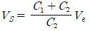
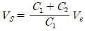
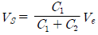
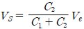
(정답률: 48%)
64. 다음에서 전기기기 방폭의 기본개념과 이를 이용한 방폭 구조로 볼 수 없는 것은?
- 점화원의 격리 - 내압(耐壓)방폭구조
- 전기기기 안전도의 증강 - 안전증 방폭구조
- 폭발성 위험분위기 해소 - 유입방폭구조
- 점화능력의 본질적 억제 - 본질안전 방폭구조
(정답률: 64%)
65. 정전기로 인한 화재폭발을 방지하기 위한 조치가 필요한 설비가 아닌 것은?
- 인화성물질을 함유하는 도료 및 접착제 등을 도포하는 설비
- 위험물을 탱크로리에 주입하는 설비
- 탱크로리.탱크차 및 드럼 등 위험물 저장설비
- 위험기계.기구 및 그 수중설비
(정답률: 64%)
66. 440[V]의 회로에 ELB(누전차단기)를 설치할 때 어느 규격의 ELB를 설치하는 것이 안전한가? (단, 인체저항은 500[Ω]이다.)
- 30[mA] 0.1초
- 30[mA] 0.03초
- 30[mA] 0.3초
- 30[mA] 1초
(정답률: 72%)
67. 다음 중 정전기에 대한 설명으로 가장 알맞은 것은?
- 전하의 공간적 이동이 크고, 그것에 의한 자계의 효과가 전계의 효과에 비해 매우 큰 전기
- 전하의 공간적 이동이 적고, 그것에 의한 자계의 효과가 전계에 비해 무시할 정도의 적은 전기
- 전하의 공간적 이동이 적고, 그것에 의한 전계의 효과와 자계의 효과가 서로 비슷한 전기
- 전하의 공간적 이동이 크고, 그것에 의한 자계의 효과와 전계의 효과를 서로 비교할 수 없는 전기
(정답률: 64%)
68. 대전서열을 올바르게 나열한 것은?(단, (+) ~ (-) 순임)
- 폴리에틸렌 - 셀룰로이드 - 염화비닐 - 테프론
- 셀룰로이드 - 폴리에틸렌 - 염화비닐 - 테프론
- 염화비닐 - 폴리에틸렌 - 셀룰로이드 - 테프론
- 테프론 - 셀룰로이드 - 염화비닐 - 폴리에틸렌
(정답률: 52%)
69. 인체의 저항을 500[Ω]으로 볼 때 심실세동을 일으키는 전류에서의 전기에너지는 약 몇 [J]인가? (단, 심실세동전류는
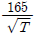
[mA] 이며 이며, 통전시간 T는 1초 전원은 정현파 교류이다.)- 3.3
- 13.0
- 13.6
- 272.2
(정답률: 77%)
70. 전기회로 개폐기의 스파크에 의한 화재를 방지하기 위한 대책으로 틀린 것은?
- 가연성 분진이 있는 곳은 방폭형으로 한다.
- 개폐기를 불연성 함에 넣는다.
- 과전류 차단용 퓨즈는 비포장 퓨즈로 한다.
- 접촉부분의 산화 또는 나사풀림이 없도록 한다.
(정답률: 77%)
71. 접지저항값을 저하시키는 방법 중 거리가 먼 것은?
- 접지봉에 도전성이 좋은 금속을 도금한다.
- 접지봉을 병렬로 연결한다.
- 도전성 물질을 접지극 주변의 토양에 주입한다.
- 접지봉을 땅속 깊이 매설한다.
(정답률: 45%)
72. 절연물은 여러 가지 원인으로 전기저항이 저하되어 절연불량을 일으켜 위험한 상태가 되는데, 이 절연불량의 주요 원인과 거리가 먼 것은?
- 진동, 충격 등에 의한 기계적 요인
- 산화 등에 의한 화학적 요인
- 온도상승에 의한 열적 요인
- 오염물질 등에 의한 환경적 요인
(정답률: 44%)
73. 역률개선용 콘덴서에 접속되어있는 전로에서 정전 작업을 실시할 경우 다른 정전작업과는 달리 특별히 주의 깊게 취해야 할 조치사항은 다음 중 어떤 것인가?
- 개폐기 통전금지
- 활선 근접 작업에 대한 방호
- 전력 콘덴서의 잔류전하 방전
- 안전표지의 부착
(정답률: 70%)
74. 가연성가스가 저장된 탱크의 릴리프밸브가 가끔 작동하여 가연성 가스나 증기가 방출되는 부근의 위험장소 분류는?
- 0종
- 1종
- 2종
- 준위험장소
(정답률: 51%)
75. 피뢰기의 설치장소가 아닌 것은?
- 저압 수용장소의 인입구
- 가공전선로에 접속하는 배전용 변압기의 고압측
- 지중전선로와 가공전선로가 접속되는 곳
- 발전소 또는 변전소의 가공전선 입입구 및 인출구
(정답률: 70%)
76. 금속관의 방폭형 부속품에 관한 설명 중 틀린 것은?
- 아연도금을 한 위에 투명한 도료를 칠하거나 녹스는 것을 방지한 강 또는 가단주철 일 것
- 안쪽 면 및 끝부분은 전선의 피복을 손상하지 않도록 매끈한 것일 것
- 전선관의 접속부분의 나사는 5턱 이상 완전히 나사 결합이 될 수 있는 길이일 것
- 접합면 중 나사의 접합은 유압방폭구조의 폭발압력 시험에 적합할 것
(정답률: 51%)
77. 교류 아크용접기의 사용에서 무부하 전압이 80[V], 아크 전압 25[V], 아크 전류 300[A]일 경우 효율은 약 몇 [%]인가? (단, 내부손실은 4[kW]이다.)
- 65
- 68
- 70
- 72
(정답률: 35%)
78. 작업자의 직접 접촉에 의한 감전방지 대책이 아닌 것은?
- 충전부가 노출되지 않도록 폐쇄형 외함구조로 할 것
- 충전부에 절연 방호망을 설치할 것
- 충전부는 내구성이 있는 절연물로 완전히 덮어 감쌀 것
- 관계자 외에도 쉽게 출입이 가능한 장소에 충전부를 설치 할 것
(정답률: 79%)
79. 다음 중 누전차단기를 설치하지 않아도 되는 장소는?
- 기계.기구를 건조한 곳에 시설하는 경우
- 파이프라인 등의 발열장치의 시설에 공급하는 전로의 경우
- 대지전압 150[V]이하인 기계.기구를 물기가 있는 장소에 시설하는 경우
- 콘크리트에 직접 매설하여 시설하는 케이블의 임시배선 전원의 경우
(정답률: 49%)
80. 다음 중 가수전류(Let-go Current)에 대한 설명으로 옳은 것은?
- 마이크 사용 중 전격으로 사망에 이른 전류
- 전격을 일으킨 전류가 교류인지 직류인지 구별할 수 없는 전류
- 충전부로부터 인체가 자력으로 이탈할 수 있는 전류
- 몸이 물에 젖어 전압이 낮은 데도 전격을 일으킨 전류
(정답률: 72%)
5과목: 화학설비위험방지기술
81. 다음 중 반응폭주에 의한 위급상태의 발생을 방지하기 위하여 특수 반응 설비에 설치하여야 하는 장치로 적당하지 않은 것은?
- 원.재료의 공급차단장치
- 보유 내용물의 방출장치
- 불활성 가스의 제거장치
- 반응정지제 등의 공급장치
(정답률: 53%)
82. 다음 중 산업안전보건법에 따라 안지름 150mm 이상의 압력용기, 정변위 압축기 등에 대해서 과압에 따른 폭발을 방지하기 위하여 설치하여야 하는 방호장치는?
- 역화방지기
- 안전밸브
- 감지기
- 체크밸브
(정답률: 69%)
83. 고체의 연소형태 중 증발연소에 속하는 것은?
- 나프탈렌
- 목재
- TNT
- 목탄
(정답률: 75%)
84. 다음 중 가연성 물질과 산화성 고체가 혼합하고 있을 때 연소에 미치는 현상으로 옳은 것은?
- 착화온도(발화점)가 높아진다.
- 최소점화에너지가 감소하며, 폭발의 위험성이 증가 한다.
- 가스나 가연성 증기의 경우 공기혼합보다 연소범위가 축소된다.
- 공기 중에서 보다 산화작용이 약하게 발생하여 화염 온도가 감소하며 연소속도가 늦어진다.
(정답률: 69%)
85. 다량의 황산이 가연물과 혼합되어 화재가 발생하였을 경우의 소화 작업으로 적절하지 못한 방법은?
- 회(灰)로 덮어 질식소화를 한다.
- 건조분말로 질식소화를 한다.
- 마른 모래로 덮어 질식소화를 한다.
- 물을 뿌려 냉각소화 및 질식소화를 한다.
(정답률: 76%)
86. 다음 중 펌프의 공동현상(cavitation)을 방지하기 위한 방법으로 가장 적절한 것은?
- 펌프의 유효 흡입양정을 작게 한다.
- 펌프의 회전속도를 크게 한다.
- 흡입측에서 펌프의 토출량을 줄인다.
- 펌프의 설치 위치를 높게 한다.
(정답률: 54%)
87. 다음 중 국소배기시설에서 후드(hood)에 의한 제작 및 설치 요령으로 적절하지 않은 것은?
- 유해물질이 발생하는 곳마다 설치한다.
- 후드의 개구부 면적은 가능한 한 크게 한다.
- 후드를 가능한 한 발생원에 접근시킨다.
- 후드(hood) 형식은 가능하면 포위식 또는 부스식 후드를 설치한다.
(정답률: 65%)
88. 화재의 방지대책을 예방(豫防), 국한(局限), 소화(消火), 피난(避難)의 4가지 대책으로 분류할 때 다음 중 예방 대책에 해당되는 것은?
- 발화원 제거
- 일정한 공지의 확보
- 가연물의 직접(直接) 방지
- 건물 및 설비의 불연성화(不燃性化)
(정답률: 46%)
89. 다음 중 분진의 폭발위험성을 증대시키는 조건에 해당하는 것은?
- 분진의 발열량이 적을수록
- 분위기 중 산소 농도가 작을수록
- 분진 내의 수분농도가 작을수록
- 분진의 표면적이 입자체적에 비교하여 작을수록
(정답률: 65%)
90. 다음 중 산업안전보건법상 공정안전보고서의 안전운전 계획에 포함되지 않는 항목은?
- 안전작업허가
- 안전운전지침서
- 가동 전 점검지침
- 비상조치계획에 따른 교육계획
(정답률: 60%)
91. 에틸렌(C2H4)이 완전연소하는 경우 다음의 Jones을 이용하여 계산할 경우 연소하한계는 약 몇 vol%인가?
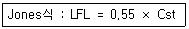
- 0.55
- 3.6
- 6.3
- 8.5
(정답률: 59%)
92. 다음 중 소화약제에 의한 소화기의 종류와 방출에 필요한 가압방법의 분류가 잘못 연결된 것은?
- 이산화탄소 소화기 : 축압식
- 물 소화기 : 펌프에 의한 가압식
- 산.알칼리 소화기 : 화학반응에 의한 가압식
- 할로겐화합물 소화기 : 화학반응에 의한 가압식
(정답률: 46%)
93. 다음 중 물질안전보건자료(MSDS)의 작성.비치대상에서 제외되는 물질이 아닌 것은? (단, 해당하는 관계 법령의 명칭은 생략한다.)
- 화장품
- 사료
- 플라스틱 원료
- 식품 및 식품첨가물
(정답률: 59%)
94. 다음 중 건조설비를 사용하여 작업을 하는 경우에 폭발이나 화재를 예방하기 위하여 준수하여야 하는 사항으로 틀린 것은?
- 위험물 건조설비를 사용하는 경우에는 미리 내부를 청소하거나 환기할 것
- 위험물 건조설비를 사용하여 가열건조하는 건조물은 쉽게 이탈되도록 할 것
- 고온으로 가열건조한 인화성 액체는 발화의 위험이 없는 온도로 냉각한 후에 격납시킬 것
- 바깥 면이 현저히 고온이 되는 건조설비에 가까운 장소에는 인화성 액체를 두지 않도록 할 것
(정답률: 79%)
95. 고압(高壓)의 공기 중에서 장시간 작업하는 경우에 발생하는 잠함병(潛函病) 또는 잠수병(潛水病)은 다음 중 어떤 물질에 의하여 중독현상이 일어나는가?
- 질소
- 황화수소
- 일산화탄소
- 이산화탄소
(정답률: 67%)
96. 25℃ 액화프로판가스 용기에 10kg 의 LPG가 들어있다. 용기가 파열되어 대기압으로 되었다고 한다. 파열되는 순간 증발되는 프로판의 질량은 약 얼마인가? (단, LPG의 비열은 2.4kJ/kg.℃이고, 표준비점은 -42.2℃ 증발잠열은 384.2kJ/kg이라고 한다.)
- 0.42kg
- 0.52kg
- 4.20kg
- 7.62kg
(정답률: 38%)
97. 산업안전보건법상 부식성 물질 중 부식성 산류에 해당하는 물질과 기준농도가 올바르게 연결된 것은?
- 염산 : 15% 이상
- 황산 : 10% 이상
- 질산 : 10% 이상
- 아세트산 : 60% 이상
(정답률: 66%)
98. 공기 중에서 이황화탄소(CS2)의 폭발한계는 하한값이 1.25vol%, 상한값이 44vol%이다. 이를 20℃ 대기압하에서 mg/L의 단위로 환산하면 하한값과 상한값은 각각 약 얼마인가? (단, 이황화탄소의 분자량은 76.1 이다.)
- 하한값 : 61, 상한값 : 640
- 하한값 : 39.6, 상한값 : 1395.2
- 하한값 : 146, 상한값 : 860
- 하한값 : 55.4, 상한값 : 1641.8
(정답률: 52%)
99. 다음 중 분해 폭발의 위험성이 있는 아세틸렌의 용제로 가장 적절한 것은?
- 에테르
- 에틸알코올
- 아세톤
- 아세트알데히드
(정답률: 71%)
100. 압축기의 운전 중 흡입배기 밸브의 불량으로 인한 주요 현상으로 볼 수 없는 것은?
- 가스온도가 상승한다.
- 가스압력에 변화가 초래된다.
- 밸브 작동음에 이상을 초래한다.
- 피스톤링의 마모와 파손이 발생한다.
(정답률: 54%)
6과목: 건설안전기술
101. 비계의 부재 중 기둥과 기둥을 연결시키는 부재가 아닌 것은?
- 띠장
- 장선
- 가새
- 작업발판
(정답률: 66%)
102. 유해위험방지계획서를 제출해야 될 건설공사 대상 사업장 기준으로 옳지 않은 것은?
- 최대 지간길이가 40m 이상인 교량건설 등의 공사
- 지상높이가 31m 이상인 건축물
- 터널 건설 등의 공사
- 깊이 10m 이상인 굴착공사
(정답률: 74%)
103. 건설현장에서 작업환경을 측정해야 할 작업에 해당되지 않는 것은?
- 산소 결핍작업
- 탱크 내 도장작업
- 건물 외부 도장작업
- 터널 내 천공작업
(정답률: 73%)
104. 철골건립준비를 할 때 준수하여야 할 사항과 가장 거리가 먼 것은?
- 지상 작업장에서 건립준비 및 기계.기구를 배치할 경우에는 낙하물의 위험이 없는 평탄한 장소를 선정하여 정비하고 경사지에는 작업대나 임시발판 등을 설치하는 등 안전하게 한 후 작업하여야 한다.
- 건립작업에 다소 지장이 있다하더라도 수목은 제거하여서는 안된다.
- 사용전에 기계.기구에 대한 정비 및 보수를 철저히 실시하여야 한다.
- 기계에 부착된 앵커 등 고정장치와 기초구조 등을 확인하여야 한다.
(정답률: 77%)
1⑤. 일반적으로 사면의 붕괴위험이 가장 큰 것은?
- 사면의 수위가 서서히 상승할 때
- 사면의 수위가 급격히 하강할 때
- 사면이 완전 건조상태에 있을 때
- 사면이 완전 포화상태에 있을 때
(정답률: 57%)
106. 소일네일링(Soil Nailing) 공법의 적용에 한계를 가지는 지반조건에 해당되지 않는 것은?(오류 신고가 접수된 문제입니다. 반드시 정답과 해설을 확인하시기 바랍니다.)
- 지하수와 관련된 문제가 있는 지반
- 점성이 있는 모래와 자갈질 지반
- 일반시설물 및 지하구조물, 지중매설물이 집중되어 있는 지반
- 잠재적으로 동결가능성이 있는 지층
(정답률: 45%)
107. 표준관입시험에서 30cm 관입에 필요한 타격회수(N)가 50 이상 일 때 모래의 상대밀도는 어떤 상태인가?
- 몹시 느슨하다.
- 느슨하다.
- 보통이다.
- 대단히 조밀하다.
(정답률: 57%)
108. 가설통로를 설치하는 경우 경사는 최대 몇 도 이하로 하여야 하는가?
- 20
- 25
- 30
- 35
(정답률: 72%)
109. 안전대를 보관하는 장소의 환경조건으로 옳지 않은 것은?
- 통풍이 잘되며, 습기가 없는 곳
- 화기 등이 근처에 없는 곳
- 부식성 물질이 없는 곳
- 직사광선이 닿아 건조가 빠른 곳
(정답률: 78%)
110. 잠함 또는 우물통의 내부에서 굴착작업을 할 때의 준수사항으로 옳지 않은 것은?
- 굴착깊이가 10m 를 초과하는 때에는 해당 작업장소와 외부와의 연락을 위한 통신설비 등을 설치한다.
- 산소결핍의 우려가 있는 때에는 산소의 농도를 측정하는 자를 지명하여 측정하도록 한다.
- 근로자가 안전하게 승강하기 위한 설비를 설치한다,
- 측정결과 산소의 결핍이 인정될 때에는 송기를 위한 설비를 설치하여 필요한 양의 공기를 송급하여야 한다.
(정답률: 61%)
111. 다음 중 양중기에 해당되지 않는 것은?
- 어스드릴
- 크레인
- 리프트
- 곤돌라
(정답률: 73%)
112. 다음 중 수중굴착 공사에 가장 적합한 건설기계는?
- 파워쇼벨
- 스크레이퍼
- 불도저
- 클램쉘
(정답률: 67%)
113. 달비계를 설치할 때 작업발판의 폭은 최소 얼마 이상으로 하여야 하는가?
- 30cm
- 40cm
- 50cm
- 60cm
(정답률: 68%)
114. 다음 중 쇼벨로우더의 운영방법으로 옳은 것은?
- 점검 시 버킷은 가장 상위의 위치에 올려놓는다.
- 시동시에는 사이드 브레이크를 풀고서 시동을 건다.
- 경사면을 오를 때에는 전진으로 주행하고 내려올 때는 후진으로 주행한다.
- 운전자가 운전석에서 나올 때는 버킷을 올려 놓은 상태로 이탈한다.
(정답률: 63%)
115. 히빙(Heaving) 현상 방지대책으로 옳지 않은 것은?
- 흙막이 벽체의 근입깊이를 깊게 한다.
- 흙막이 벽체 배면의 지반을 개량하여 흙의 전단강도를 높인다.
- 부풀어 솟아오르는 바닥면의 토사를 제거한다.
- 소단을 두면서 굴착한다.
(정답률: 58%)
116. 연암지반을 인력으로 굴착할 때, 연직높이가 2m일 때, 수평길이는 최소 얼마 이상이 필요한가?(관련 규정 개정전 문제로 여기서는 기존 정답인 3번을 누르면 정답 처리됩니다. 자세한 내용은 해설을 참고하세요.)
- 2.0m 이상
- 1.5m 이상
- 1.0m 이상
- 0.5m 이상
(정답률: 54%)
117. 지름 0.3 ~ 1.5m 정도의 우물을 굴착하여 이 속에 우물측관을 삽입하여 속으로 유입하는 지하수를 펌프로 양수하여 지하수위를 낮추는 방법은 무엇인가?
- Well Point 공법
- Deep Well 공법
- Under Pinning 공법
- Vertical Drain 공법
(정답률: 43%)
118. 다음 중 중량물을 운반할 때의 바른 자세는?
- 길이가 긴 물건은 앞쪽을 높게 하여 운반한다.
- 허리를 구부리고 양손으로 들어올린다.
- 중량은 보통 체중의 60%가 적당하다.
- 물건은 최대한 몸에서 멀리 떼어서 들어올린다.
(정답률: 68%)
119. 지표면에서 소정의 위치까지 파내려간 후 구조물을 축조하고 되메운 후 지표면을 원상태로 복구시키는 공법은?
- NATM 공법
- 개착식 터널공법
- TBM 공법
- 침매공법
(정답률: 54%)
120. 강관을 사용하여 비계를 구성하는 때 준수하여야 할 기준으로 옳지 않은 것은?(관련 규정 개정전 문제로 여기서는 기존 정답인 4번을 누르면 정답 처리됩니다. 자세한 내용은 해설을 참고하세요.)
- 비계기둥의 간격은 띠장 방향에서는 1.5m 이상 1.8m 이하, 장선(長線) 방향에서는 1.5m 이하로 할 것
- 띠장 간격은 1.5m 이하로 설치하되, 첫 번째 띠장은 지상으로부터 2m 이하의 위치에 설치할 것
- 비계기둥의 제일 윗부분으로부터 31m되는 지점 밑부분의 비계기둥은 2개의 강관으로 묶어 세울 것
- 비계기둥 간의 적재하중은 300kg을 초과하지 않도록 할 것
(정답률: 71%)